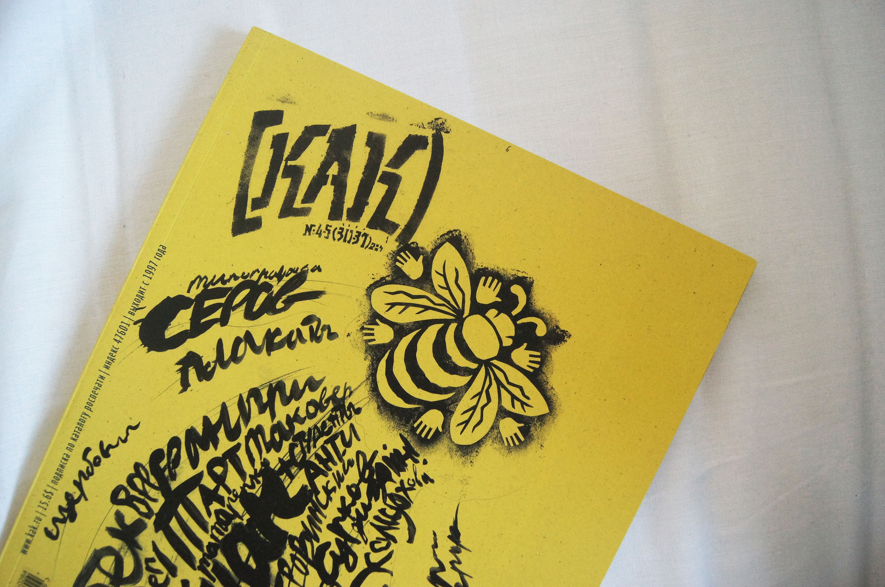

Сегодня, 11 октября нашу группу вместо обычной пары пригласили на выставку художников, скульпторов, архитекторов и дизайнеров Moscow Design Week в рамках Московской международной биеннале графического дизайна "Золотая пчела". Меня очень впечатлила эта выставка многообразием творческих решений. На фотографии справа - журнал "Как" графического дизайнера Петра Банкова, посвященный "Золотой пчеле" 2004 года.
